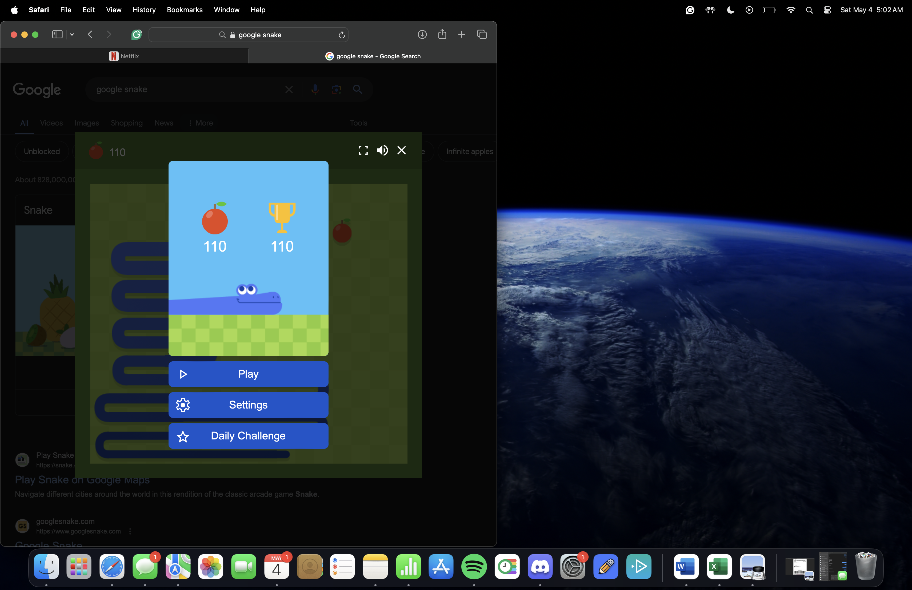

EDUCATION
University of Miami - Coral Gables, Florida
Bachelor of Business Administration, Major in Finance, Minor in Accounting (Expected May 2027)
- Relevant Coursework: Business Analytics; Principles of Financial Accounting, Fundamentals of Finance
WORK & LEADERSHIP EXPERIENCE
- Intern at Knowledge Management, Tyngsborough, MA (May 2024 – August 2024)
Assisted upper management in their transition away from Oracle. Researched different possibilities according to their needs, presented the information, and aided in the decision-making process utilizing the information given.
Learned about key concepts and immersed myself within the fundamentals of accounting, including financial statements, DCAA compliance, auditing, etc.
- Food Runner / Host at Fox Creek Tavern, Ipswich, MA (January 2023 – August 2023)
Delivered food to tables and seated guests, managed waitlist and mobile orders, ensured timely service, maintained cleanliness and table turnover within 90-minute dining time.
- Intern at SG Computers, Framingham, MA (May 2022 – August 2022)
Utilized Excel to learn about financial and data analysis, used these skills to aid in creating financial models, as well as analyzing and generating reports on company finances and spending.
Learned the basic skills of IT services, did basic jobs as necessary, and specialized in data entry and organization.
- Sales Associate at American Eagle, Danvers, MA (April 2021 – September 2022)
Assisted customers with product selection to ensure a positive shopping experience and maximize sales, maintained a clean and organized sales floor by quickly replenishing sold-out items.
Managed customer flow during peak holiday seasons to reduce wait times and maintain store capacity, Operated the cash register efficiently and analyzed and adapted to changes in customer demand during different seasons.
- Participant / 4x Award Winner at Investment Club, Danvers, MA (September 2019 – May 2023)
Utilized money given by school and donors to ensure that said money is invested in the best stocks and bonds to maintain highest returns possible. Pitched ideas to all members, collectively agreed on what to buy and sell, presented to donors the transactions done throughout the year, and more.
Presented in front of donors at the end of each year and presented in front of the club around once per month. Discussed new ideas, the results of our transactions, and convinced others why to make a specific decision, learned strong communication skills.
SKILLS, ACTIVITIES & INTERESTS
- Languages: Fluent in English, Conversational Proficiency in Chinese
- Activities: Let’s Get Ethical Club, Golf Club, Anime Club, Online Sneaker/Sport Card Business
- Interests: Basketball, golfing, investing, buying and reselling sneakers and cards, social outings
Contact
LinkedIn: linkedin.com/in/tej-bhatia